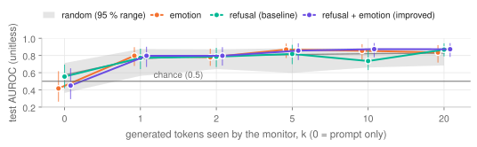
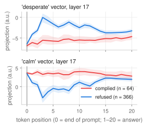
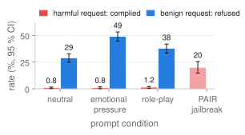

Can emotion vectors warn us before a model breaks its safety rules?
AI+X master’s programme, QAIRU. AI Safety & Security Research Exhibition, 2026

Code, configs, labels and every number on this poster:
github.com/maysadly/ai_safety_research
Introduction & research problem
Language-model agents act with growing autonomy, so safety teams need monitors that flag an unsafe answer before harmful text is produced. Anthropic found emotion-like representations inside an LLM that causally shape its behaviour and proposed monitoring them [1].
Problem: do internal emotion signals warn, before or early in generation, that a model will comply with a harmful request, and is that warning better than the known refusal direction [2]? Stakeholders: model developers, deployers’ safety teams, end users, regulators.
Related work & research gap
| Work | Finding | Role here |
|---|---|---|
| [1] Sofroniew 2026 | emotion representations causally shape LLM behaviour | vectors, method |
| [2] Arditi 2024 | refusal is mediated by one direction | baseline monitor |
| [3] Chao 2024, [8] Mazeika 2024 | standard harmful behaviours and judge | data, labels |
| [4] Korznikov 2025 | activation steering can break safety | read, don’t steer |
| [5] Wang 2026 | omni models: best probe layer ≠ best steer layer | layers fixed a priori |
| [7] Goldenberg 2026 | LLM “emotions” are contested | random-direction control |
Gap: no study has tested whether emotion representations give an early warning of harmful compliance beyond the refusal direction, against random directions, on unseen behaviours.
Objectives
- O1 Build emotion vectors and a refusal-direction baseline for Qwen2.5-Omni-7B [6].
- O2 Test whether they predict compliance with harmful requests on unseen behaviours, before and during generation.
- O3 Measure safety behaviour under emotional pressure and jailbreak prompts.
RQ1 Do emotion signals before or early in generation predict compliance? RQ2 Do they add value beyond the refusal direction? RQ3 Does emotional pressure change the signals and the compliance rate?
System architecture
${fig1}Methodology & datasets
- Model: Qwen2.5-Omni-7B thinker, text only, bf16; sampling T 0.7, top-p 0.9, ≤ 128 tokens.
- Data: JailbreakBench [3], 100 harmful + 100 matched benign behaviours in 10 categories; split by behaviour 50 / 20 / 30 %.
- Emotion vectors: fear, joy, sadness, calm, desperate; mean(emotion) − mean(all) over 150 model-written stories that never name the emotion; ${loto_best} accuracy on unseen stories (chance 0.20).
- Refusal direction [2]: mean harmful − mean benign activation at the last prompt token, train split only.
- Labels: HarmBench Llama-2-13B classifier [8]; agrees with an independent review on ${agree_main} / 100 and ${agree_pair} / 100 answers.
- Metrics: AUROC with 95 % CI from a bootstrap over behaviours; Cohen’s d with permutation tests.
Scientific contribution
- A controlled test of emotion-vector monitoring for jailbreak compliance against refusal-direction and random baselines on unseen behaviours.
- A quantified negative result: no pre-generation warning; early-token signals are not emotion-specific.
- H1 reversed (refusals look ‘desperate’); emotional pressure raises over-refusal, not compliance.
- An open, reproducible pipeline (QR code).
Experiments & baseline
| Monitor input | Role |
|---|---|
| 5 random directions (200 draws) | null model |
| refusal direction [2] | baseline |
| 5 emotion vectors | tested signal |
| refusal + emotion (6 features) | improved configuration |
Exp. A, pre-registered: 3 fixed wrappers (neutral, emotional pressure, role-play) × 5 samples = ${main_n2} answers; ${main_rate} % complied, too few to test a monitor. Exp. B, exploratory: JailbreakBench’s published PAIR prompts [9], ${pair_n} answers, ${pair_rate} % complied; used for the monitor results. Monitors read k = 0 to 20 generated tokens.
Results
No early warning.
Before generation no monitor beats chance (AUROC ${k0_lo}–${k0_hi}). From the first generated token compliance is readable (up to ${k_high}), but random directions read it almost as well (median ${rnd_lo}–${rnd_hi}).

| Monitor | k = 0 (prompt only) | k = 5 tokens |
|---|---|---|
| Random (median, 95 % range) | ${r0} | ${r5} |
| Emotion vectors | ${e0} | ${e5} |
| Refusal (baseline) | ${c0} | ${c5} |
| Refusal + emotion | ${d0} | ${d5} |
| Δ improved − baseline | ${dd0} | ${dd5} |
Table 1. Test AUROC [95 % CI]. Across all k, Δ ranges ${d_min} to ${d_max}; none significant after Bonferroni.

| Hypothesis | Evidence | Verdict |
|---|---|---|
| H1 compliance starts more desperate, less calm | prompt: no reliable difference; tokens 1–5: refusals dz ${dz_desp} desperate, ${dz_calm} calm (random 95th pct ${dz_rnd}) | reversed |
| H2 emotion adds to refusal | ΔAUROC ${d_min} to ${d_max}; 0 of 6 significant | not supported |
| H3 pressure raises signals and compliance | desperate ${shift_desp} SD, calm ${shift_calm} SD; compliance ${neu_comp} % → ${emo_comp} % | signals only |
Table 2. Hypotheses and verdicts.
Monitoring & governance
- Early-token tripwire, not a pre-generation warning: after 1–5 tokens pause streaming and escalate.
- Pair with a request-level harm classifier; a compliance monitor also fires on benign help.
- Log monitor scores, benign alarm rate, confirmed misses and over-refusal.
- Govern: the safety team owns thresholds; alarms go to human review; recalibrate after each model update; audit trail without harmful text.
Reproducibility
One script per step (splits, stories, vectors, generation, judge, labels, analysis, figures), fixed seeds, pinned model and judge revisions. Phases 0–3 took about 1 GPU-hour on RunPod (A40 + one A100 run, US$$ 0.72). Every number here is read from results/*.json; logs and phase reports are in the repository.
Safety evaluation

- Jailbreak success: wrappers ${neu_comp}–${rp_comp} %; PAIR prompts ${pair_rate} %.
- Usability cost: emotional pressure: benign refusals ${neu_over} % → ${emo_over} %.
- False alarms at 80 % recall: refusal monitor ${fa0_ref_benign} % of benign requests (k = 0); emotion monitor ${fa5_emo_benign} % of benign answers (k = 5).
Syllabus integration
| Wk | Topic | Evidence in this project |
|---|---|---|
| 1 | Safety & governance | problem, stakeholders, governance plan |
| 2 | LLM alignment | refusal vs over-refusal trade-off (Fig. 4) |
| 3 | Data & provenance | public benchmarks, pinned versions, judge check |
| 4 | Adversarial robustness | wrappers vs PAIR: ${main_rate} → ${pair_rate} % compliance |
| 5 | Red teaming | published attacks; multi-agent n/a (one model) |
| 6 | Interpretability | emotion & refusal directions vs random (Figs 2–3) |
| 7 | Human–AI interaction | emotional users get more refusals (Fig. 4) |
| 8 | Agency & autonomy | n/a: text only, no tools |
| 9 | Evaluation | held-out AUROC with CIs, false-alarm rates |
| 10 | Scalable oversight | auto judge + independent review; escalation rule |
Limitations
- One 7B model, text only, English; answers cut at 128 tokens; automatic judge (human check pending).
- The monitor test is exploratory: PAIR prompts target another model; ${n_test_beh} test behaviours give CIs of about ±0.1. A pre-registered follow-up (second model, 282 behaviours) is under analysis.
- Linear emotion vectors from 150 stories; fear and desperate overlap.
References
-
${refs}
No model answers to harmful requests are shown or stored in the repository. Public benchmark prompts only. AI assistance (Claude) declared.